8天让iOS开发者上手Flutter之三
搭建项目主框架
新建微信聊天，通讯录，发现，我的四个文件
上一篇文章最后我们已经将 APP 的 TabBar 和四个对应的子视图搭建好了，但是每一个子视图里面肯定会有大量的代码，全部放到 rootPage 文件里面肯定是不合理的。所以我们为每个子视图创建单独的文件，并将代码分散到每个文件中。
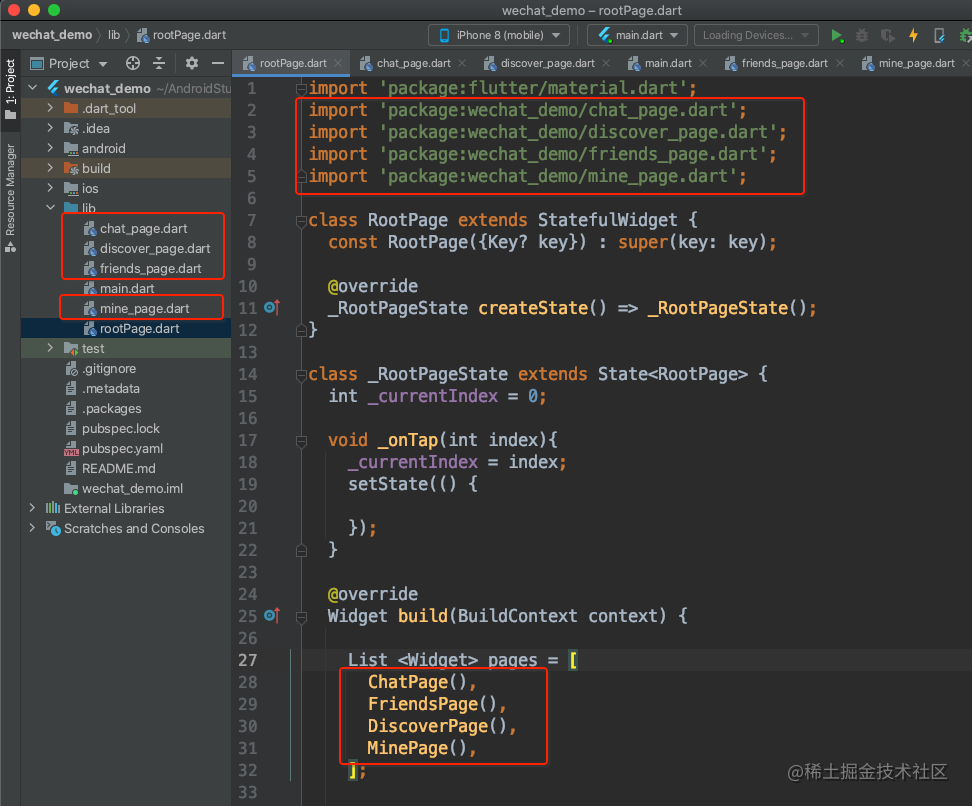
比如聊天页面，返回自己的 Scaffold：
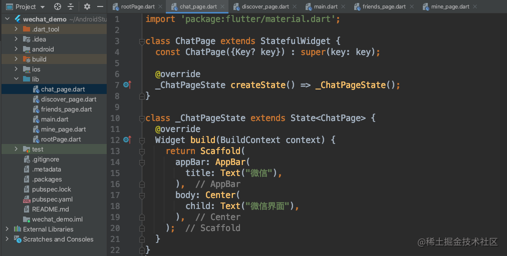
现在我们点击切换一下 tabBar 的 item，发现会有一些高亮的颜色，以及一个水波纹效果，这些都是 MaterialApp 类的 theme 提供的。如果想去掉这些效果，要来到 main.dart 文件，设置以下两个属性：
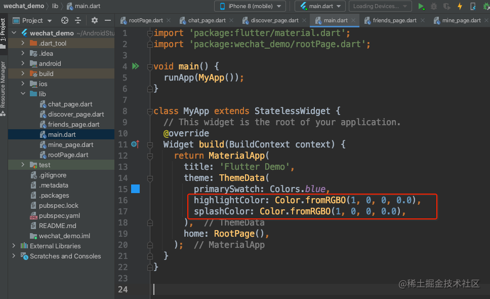
仔细查看点击 item 的时候，文字被放大了。这个是 bottomNavigationBar 的属性 selectedFontSize 决定的，将它设置为 12.0 之后，就不会变大了，在 rootPage.dart 文件里面：
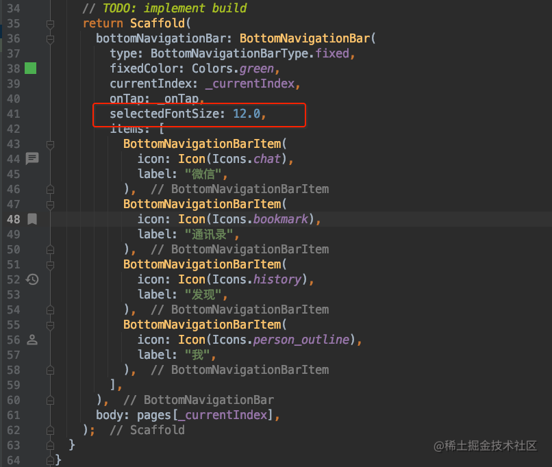
本地资源文件
配置 Android 的启动图和应用图标
Android 和 iOS 的资源文件，比如 APP 的图标，启动图，需要到相应的项目文件里面去配置。我们大家都是 iOS 开发者了，这里就只说一下 Android 的图标和启动图如何配置。有需要图片资源的同学可以前往 下载
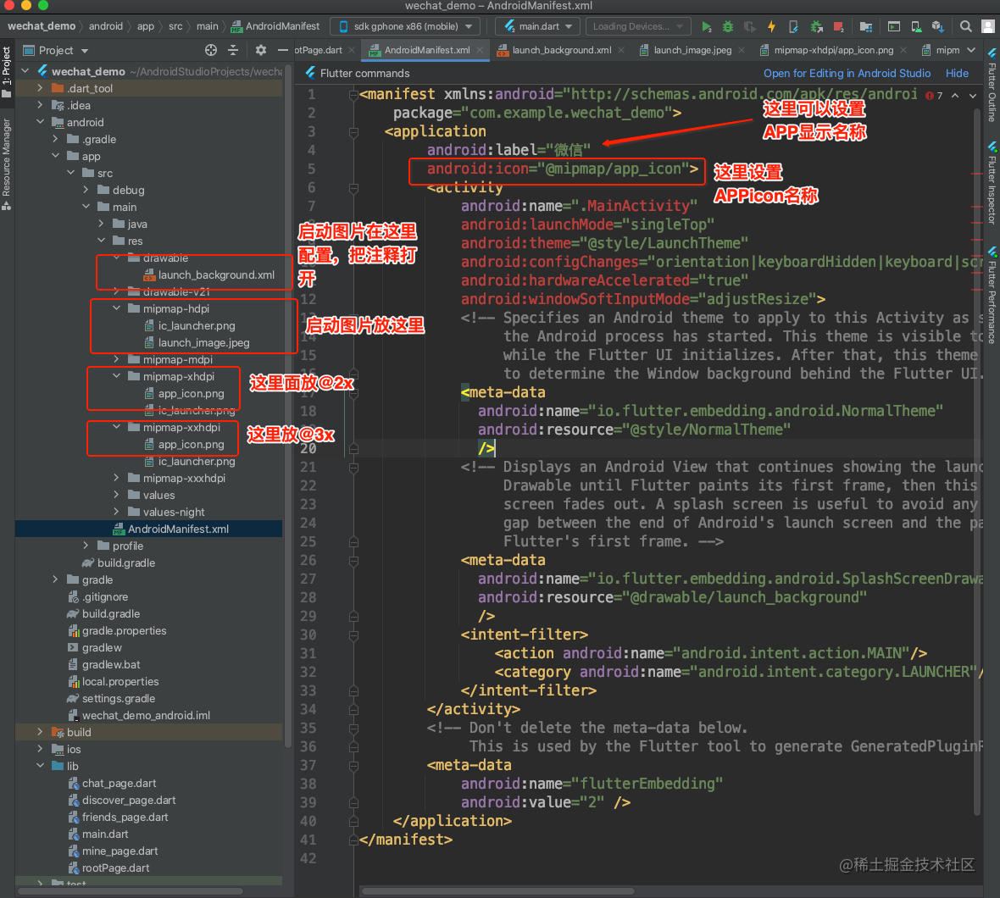
在安卓模拟器上运行起来之后，会发现安卓的标题不是在中间
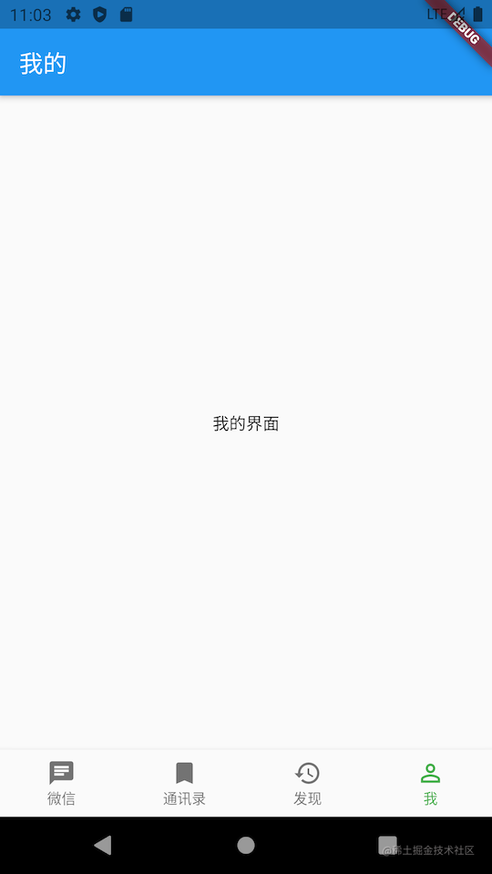
这里可以通过 AppBar 的一个属性，来调整让它变成中间显示
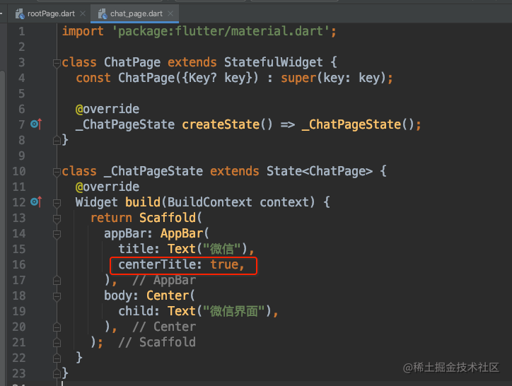
配置公共的资源
如果是两端都需要的资源，比如我们 APP 的微信，通讯录，发现和我的图标。需要在当前 flutter 项目中配置了。
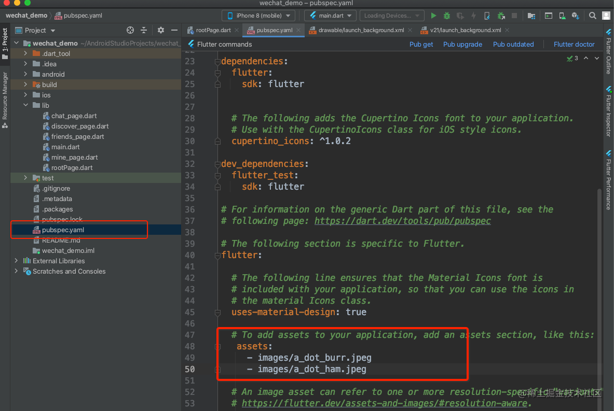
pubspec.yaml 文件是我们 flutter 项目的配置文件。文件内 assets 和下面的几行表示需要的图片路径，可以在 flutter 项目的根目录下创建一个 images 的目录，里面存放所有当前 flutter 需要用的图片。然后还需要手动导入一张一张图片…这点就比较恶心人了…更恶心人的是，这个 yaml 文件的格式，包括位置都不能错，比如刚刚放开注释的时候，如果你使用的是 command + / 快捷键，那么你就得好好挪动下位置了，位置不对编译不通过。
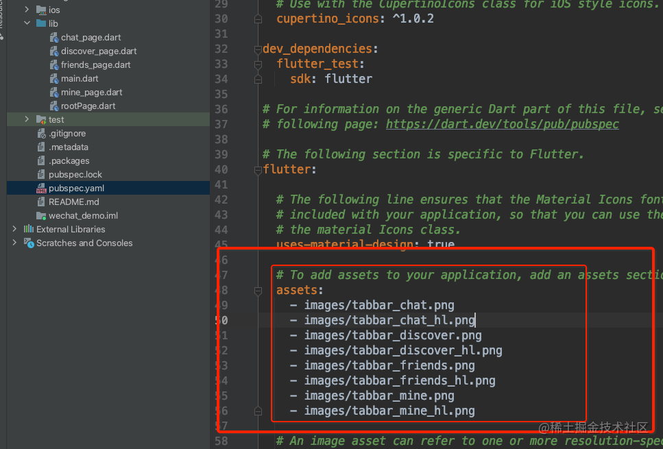
实现发现页
设置APP启动默认展示发现页面
这个方便我们开发调试这个发现页面，我们开发原生 APP 的时候也经常会这么干。直接将 rootPage.dart 里的 _currentIndex 设置为 2 就 OK 了，这个不用多说
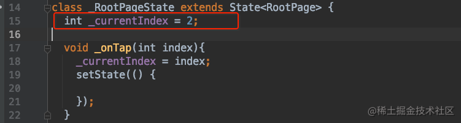
配置导航条
微信的导航条颜色是灰色的。然后在安卓上这个导航条标题默认在左侧，这里也需要设置一下在中间。然后标题的颜色也不是白色，改为黑色。然后导航条和下面的 body 有一条黑线，可以通过设置 elevation 的值来控制。
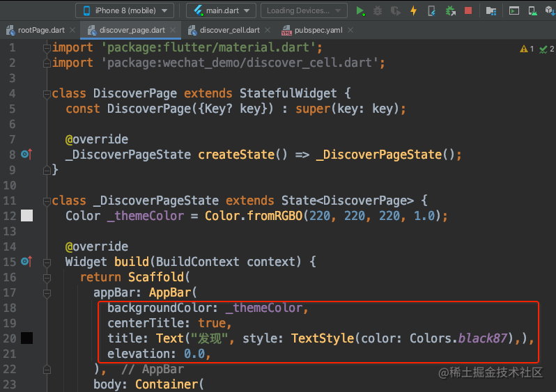
自定义发现 cell
新建一个 pages 文件，将所有页面文件都放到里面。然后在新建一个 discover_cell 准备实现自定义的 cell。按道理来说一个 cell 应该是需要更新UI的所以应该是有状态的，但是现在我们是练手过程，可以先用一个无状态的 cell。
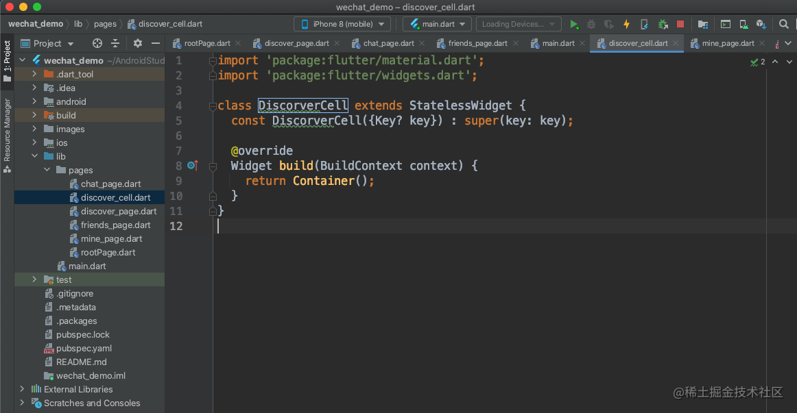
接下来就是实现这个自定义 cell（discover_cell）的代码了；首先观察微信的发现页的 cell，左侧有一个图标，和一个标题，这两个是必须要有的，不然无法构成一个完整的 cell，然后是右侧有些 cell 会有子图标和子标题，还有一个右箭头，这个是每个 cell 都存在的。根据以上这些信息，我们就可以定义出 discover_cell 应该要有的一些属性了。如下：
title左侧的标题，必传参数imageName左侧的图标，必传参数subTitle右侧的标题，非必传参数，也叫可选参数subImageName右侧的图标，可选参数
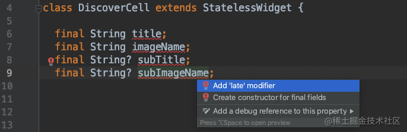
如图所示，声明了这四个属性之后，给出了红色的报错，可以将光标移到报错的红色字母任意处，按住 option + 回车 就可以弹出右侧的选择菜单，第一个选项应该是新版本加的，俺也不是很清楚如何使用，网上资料很少，推荐去查询官方文档了。我这里就懒的去查了，因为我们要选择的是第二个选线 Create constructor for final fields 创建构造方法。细心的同学会发现 subTitle,subImageName 的类型是 String? 这个类型后面跟了个问号，就是代表可选参数的意思，这里跟 iOS 的 Swift 倒是十分相似。
选择创建构造方法之后，系统会自动生成一行代码，但是这一行代码很长而且它不换行，非常难看。这里有个小技巧，在生成的代码最后一个属性后面加上一个,号然后再按 option + command + L 重新格式化代码，就会自动换行了。
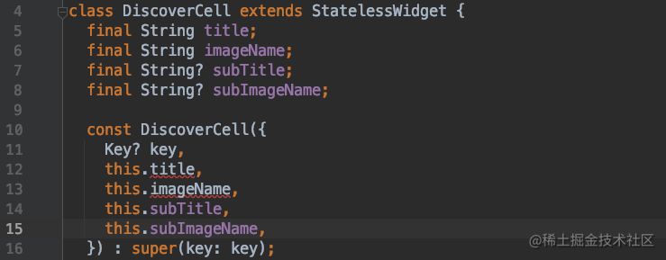
换行之后发现，两个必传参数报错，还是老办法，光标移动到报错的地方，按住 option + 回车 就会给出提示，意思我们要给必传参数加上 required 关键字。这样属性的定义就算完成了。
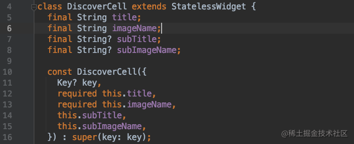
属性定义完了之后就是实现 build 方法搭建界面了。布局界面的方式有很多，可以使用 Row 来布局，也可以使用 Stack 加 Positioned 布局，不管什么方式能实现界面效果都可以。我这使用 Row 布局。代码如下：
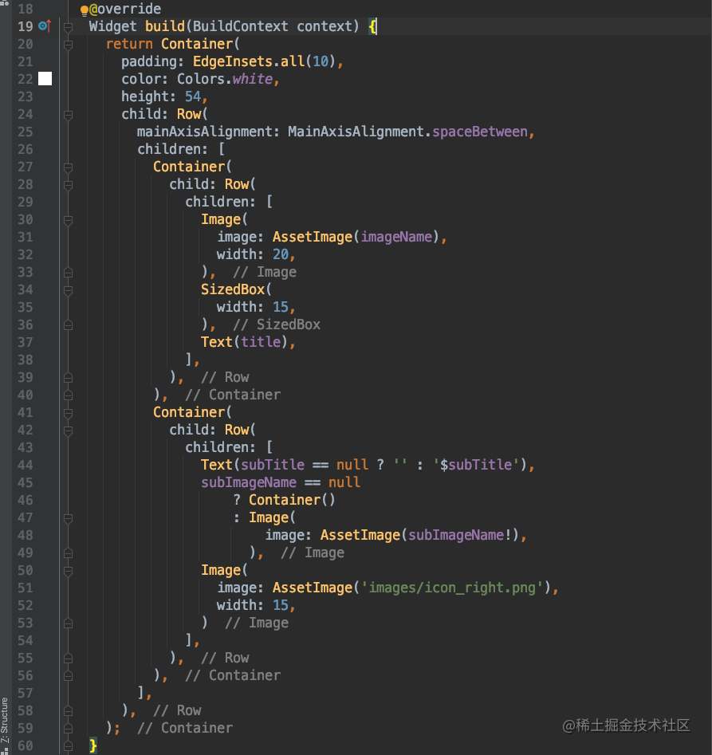
最外层使用一个 Container 包装一个 Row，然后 Row 里面再包含两个 Container 包着的 Row 分别代表左右两边子视图。这样看上去应该还算蛮清晰明了的。左侧部分的图标和标题是必传参数，没啥好说的。
右侧由于子标题和子图标都不一定存在，所以需要做一些处理，Text 控件如果没有子标题可以显示空字符串‘’，这个比较好解决。而子图标不能说给一张空图片，所以需要根据 subImageName 是否为空来显示不同的控件，如果有就显示 Image，如果没有就显示一个 Container 占位。最右侧的箭头图标是每个 cell 都存在的就没啥好说的了。自定义 discover_cell 的代码就算完成了，下一步完善我们的发现页面
完善发现页面
cell 写好之后，完善发现页面就简单多了。这里使用最简单的方式来实现，就是直接拼接每个子 cell 的方式。
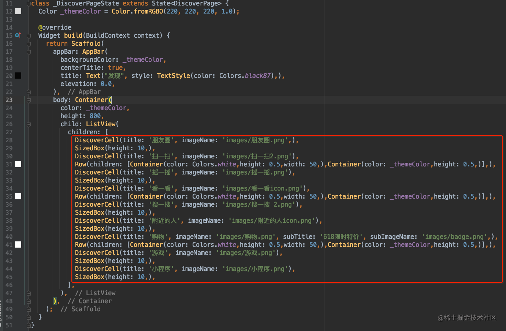
flutter 里面的 ListView 并不像 iOS 中的 UITableView 那样分组和行。ListView 只有行，自行合并几个行组成一组，组与组之间使用一个 SizedBox 隔开，行与行之间使用 Row(因为分割线左侧是白色的，右侧是灰色的，所以需要组合两个 Container)隔开。
其中购物哪一行 cell 右侧的子标题和子图标没有设置字体大小和图标大小，所以显示可能会有点问题，回到 cell 里面设置一下就好了。
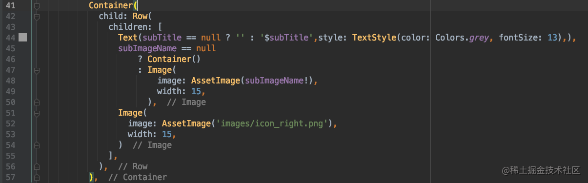
实现点击cell切换到新页面
让cell能够响应点击事件GestureDetector
flutter 提供了一个 GestureDetector 类用来检测手势，它有一个 child 属性，可以放我们的UI代码。它还能响应各种手势，在不同的属性里面处理，比如我们点击 cell 就是 onTap 属性。除了 onTap 之外，还有 onTapDown,onTapCancel。其中 onTapCancel 是触摸之后离开了，onTapDown 是按下就会被调用，onTap 按下去并松开之后调用。实现如下代码之后，自己试试就能明白其中差别了。
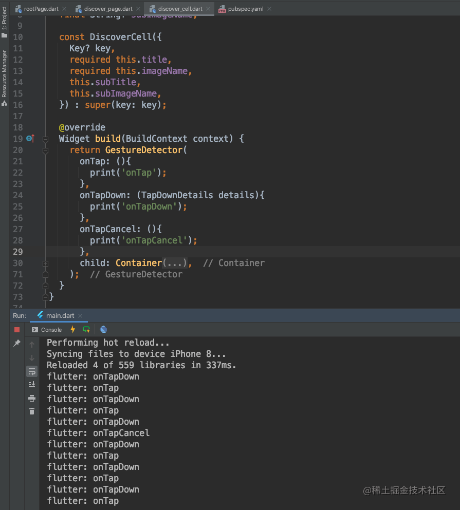
实现页面之间跳转
点击发现 cell 之后，需要跳转它对应的详情页面，就需要一个详情页。可以新建一个 discover_child_page.dart 文件，再去补充里面的页面代码。也可以从现有的一些空白文件中复制一份，比如 mine_page.dart 文件，它里面就只有基本的我的页面代码,只需少量修改代码就可以使用。不论使用哪种方式，新建 discover_child_page.dart 完成后，页面代码如下：
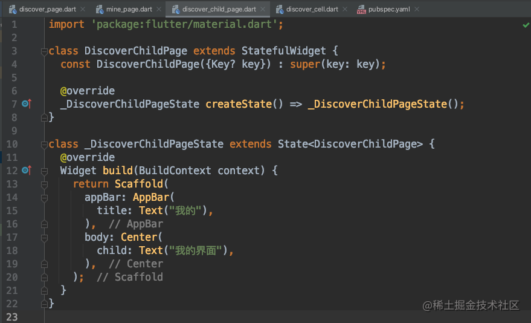
这个详情页的一些属性，应该是需要从外面传入的，比如 title。于是定义一个 title属性。
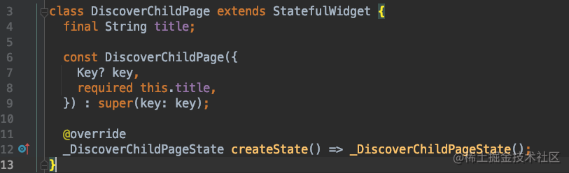
然后在当前页面展示我们的 title，之前都是在 StatelessWidget 里面使用我们的属性，那在 StatefulWidget 里面我们怎么使用属性呢？属性前面加上 widget.
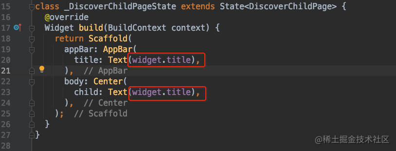
到这里发现详情页就算差不多完成了。
回到 cell 里面的点击方法，实现点击跳转。这里和 iOS 有点类似的地方就是同样是使用一个导航控制器类。flutter 也是使用一个名字叫导航的类 Navigator。调用以下方法。
1 | Navigator.of(context).push(） |
push() 的参数需要一个 Route 类型，这里使用 MaterialPageRoute 类，MaterialPageRoute 的构造方法返回一个 Widget，这个返回的 Widget 就是我们需要跳转到的页面。代码如下：
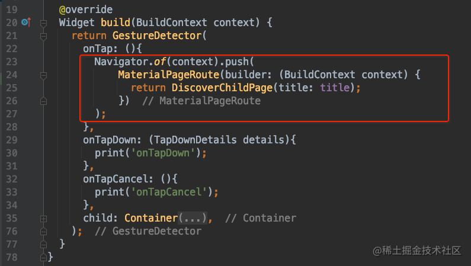
前面讲过的，在 flutter 中，如果函数体的代码只有一句的话，可以使用 => 的形式，于是上面可以简写成这样：
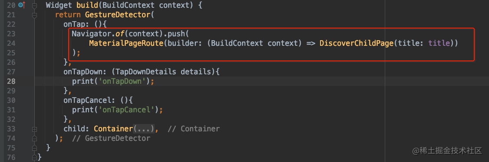
实现有状态的 discover_cell
修改 discover_cell 为 StatefulWidget
原生的微信 APP 在点击 cell 的时候，会有一个灰色的背景，在松开的时候会变回最初的颜色。现在来实现这个效果。所以我们的 discover_cell 需要从 StatelessWidget 改为 StatefulWidget。先将 build 方法缩起来，快捷键 command 加 - 号，0 右边那个减号。
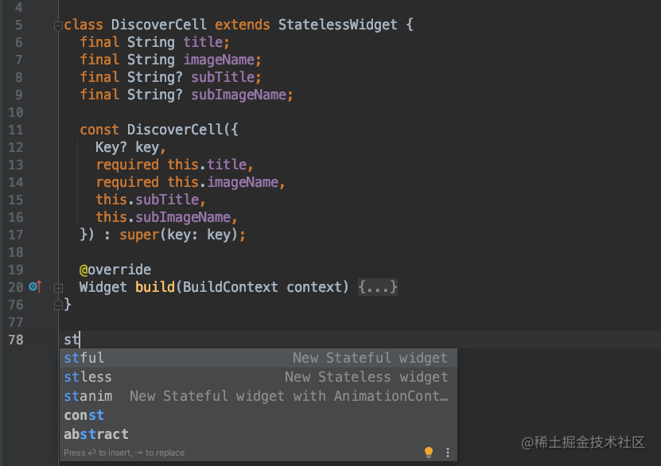
然后先将 bulid 方法覆盖，再将属性和构造方法覆盖。最后删除原有的 StatelessWidget 类。这时候 build 方法里面会爆一个错误，原因是_DiscoverCellState 类里面拿不到 DiscoverCell 的属性，所以我们在属性前面加上 widget. 就好了。
实现点击变灰需求
我们前面说过了 onTap 方法，onTapDown 方法，onTapCancel 方法的调用时机。实现这个需求就在这三个方法里面更新状态就好了。代码如下：
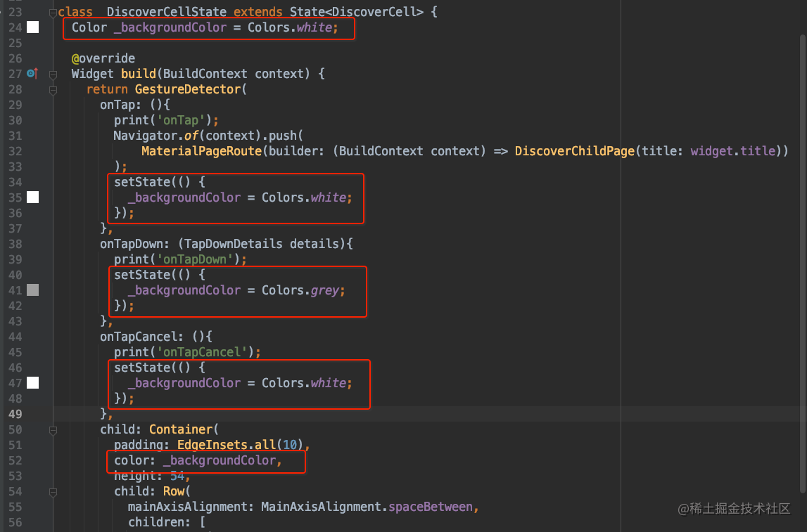